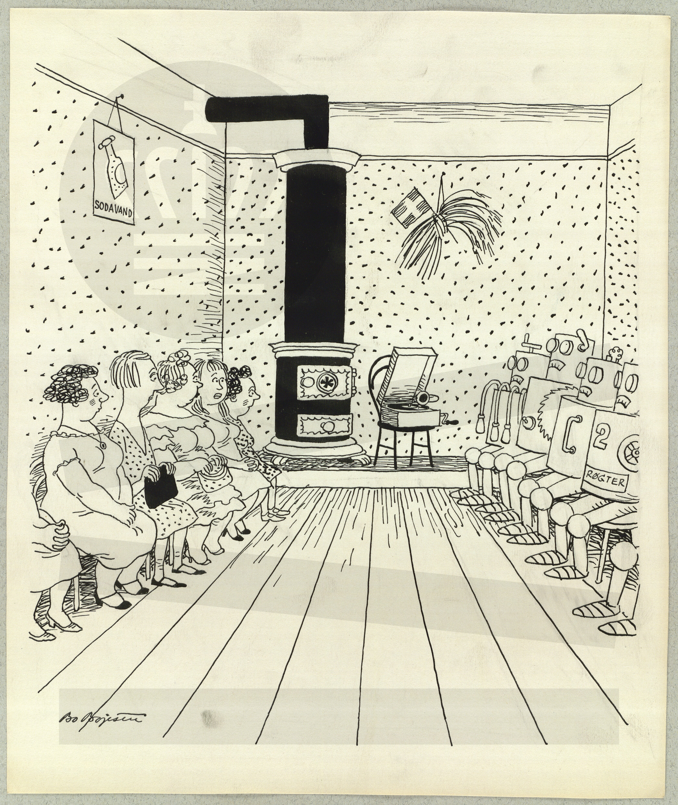
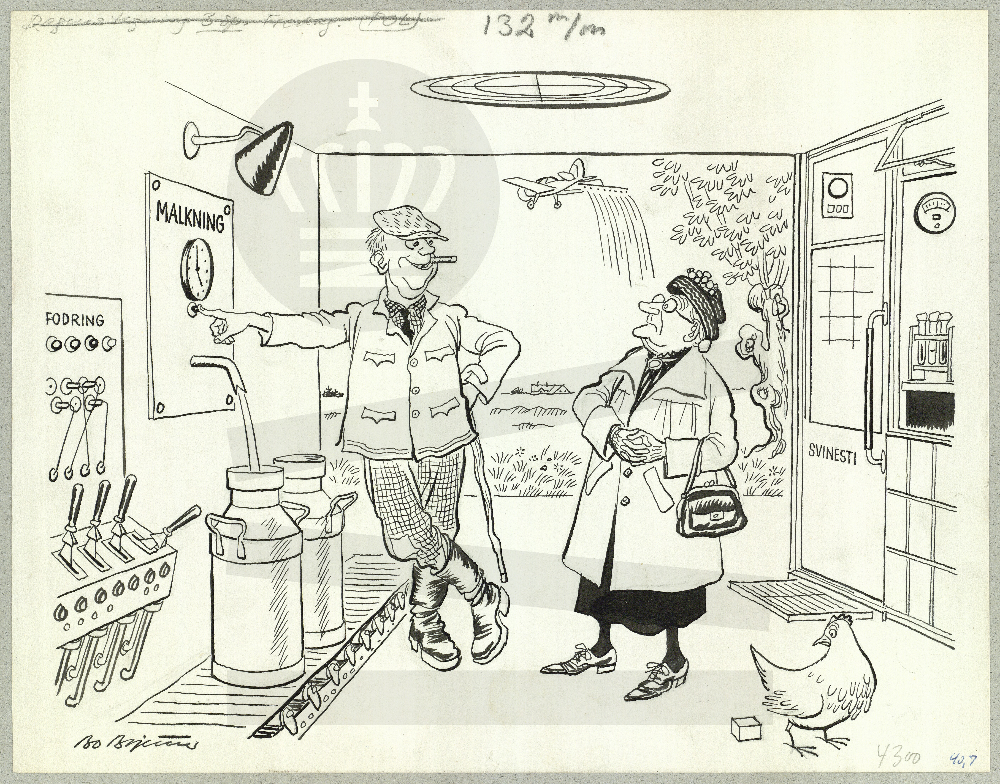
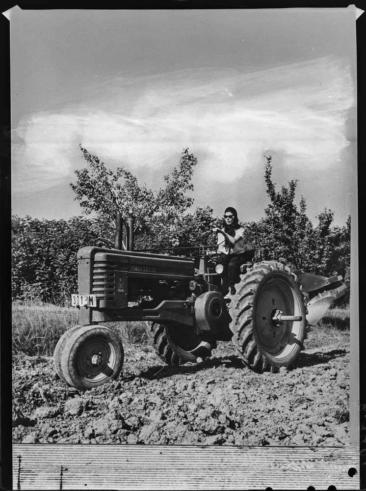
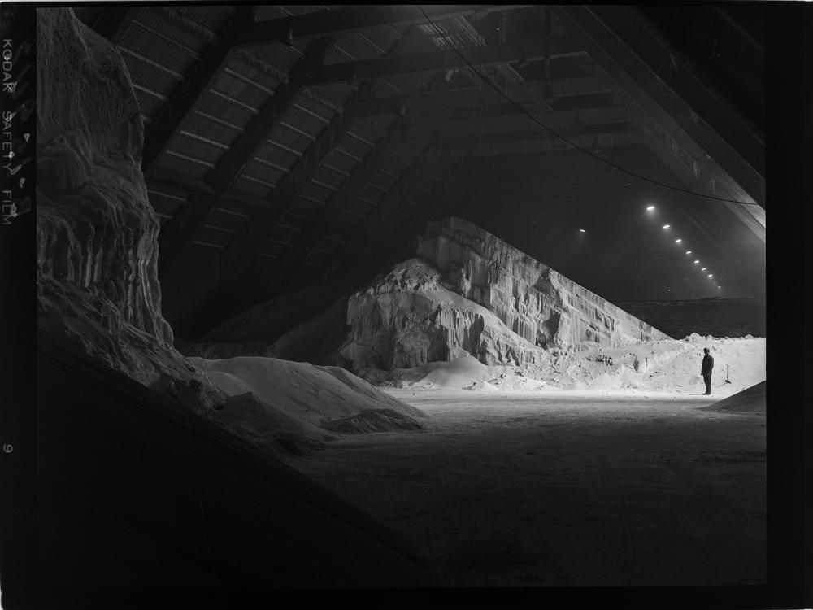
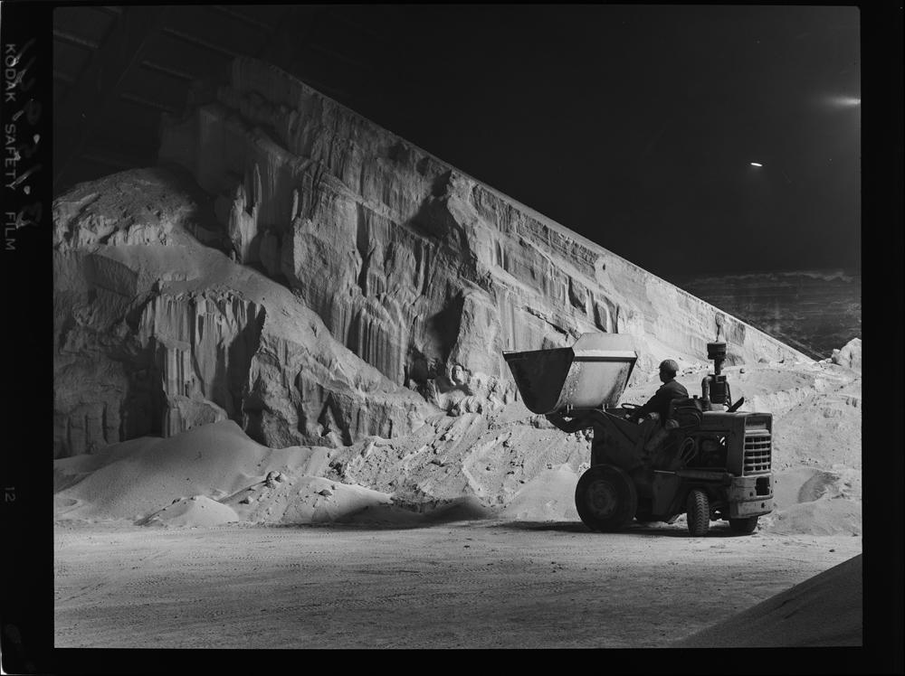
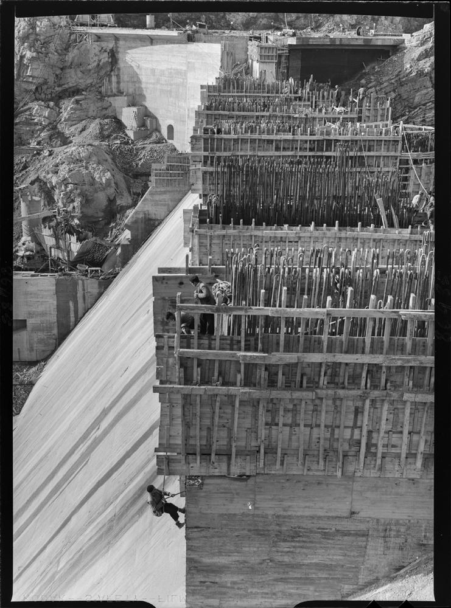
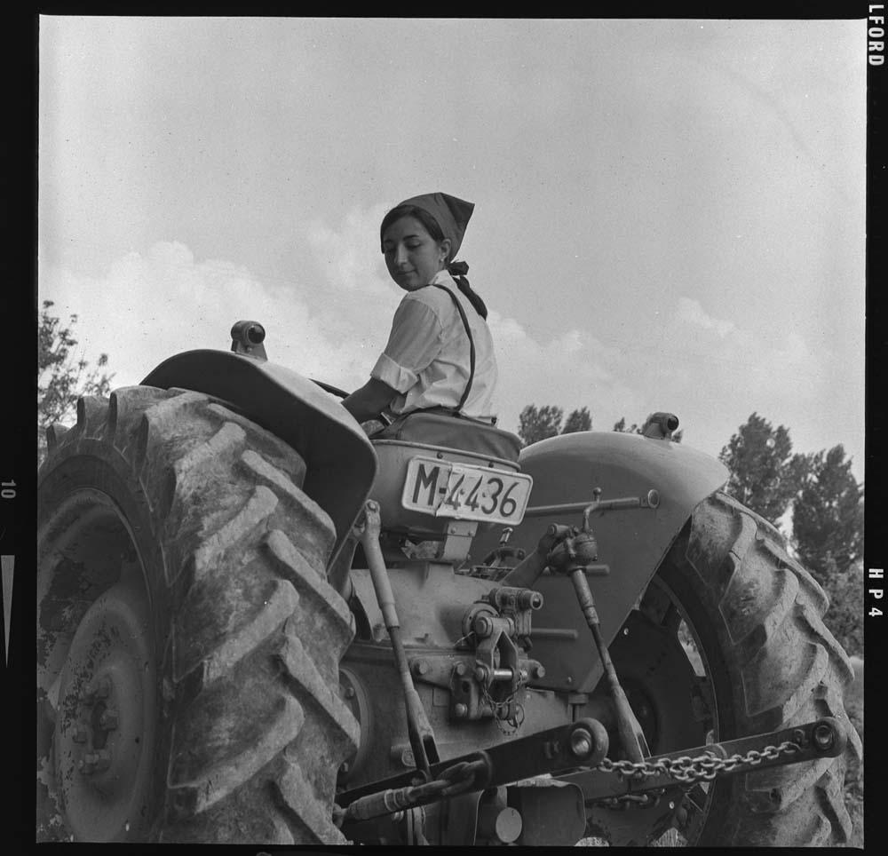

El Atlas Visual de la Digitalización de la Agricultura es un subproyecto del proyecto DigitalRift que pretende analizar cómo se producen y reproducen los imaginarios de modernización y digitalización de la agricultura a través de las imágenes.

Se propone reemplazar a los hombres en las granjas más grandes con máquinas.
Fuente: Bojesen, Bo. Dinamarca, 1948.
URL: assets/team/001.jpg Tecnología
Exposición en Herning sobre la granja del futuro completamente automatizada con botones.
Fuente: Bojesen, Bo. Dinamarca, 1959.
URL: assets/team/002.jpg Tecnología
Inaugurada en 1951, la Cátedra Ambulante ofrecía la única titulación oficial equivalente a "perito agrícola".
Fuente: Pando Barrero, Juan Miguel. Aranjuez, España.
URL: assets/team/003.jpg Género
Vista de una nave con arena en el interior de las instalaciones de la fábrica de abonos.
Fuente: Pando Barrero, Juan Miguel. Huelva, España, 1969.
URL: assets/team/004.jpg España
Vista de un operario cargando arena con una pala en las instalaciones de la fábrica de abonos.
Fuente: Pando Barrero, Juan Miguel. Huelva, España, 1969.
URL: assets/team/005.jpg España
Detalle de la pared de hormigón donde se están construyendo los contrafuertes con obreros colgados.
Fuente: Pando Barrero, Juan Miguel. Badajoz, España, 1961.
URL: assets/team/006.jpg España
Alumna conduce un tractor. Única titulación oficial equivalente a "perito agrícola".
Fuente: Pando Barrero, Juan Miguel. Aranjuez, España, 1967.
URL: assets/team/007.jpg GéneroNo hay imágenes para este filtro.